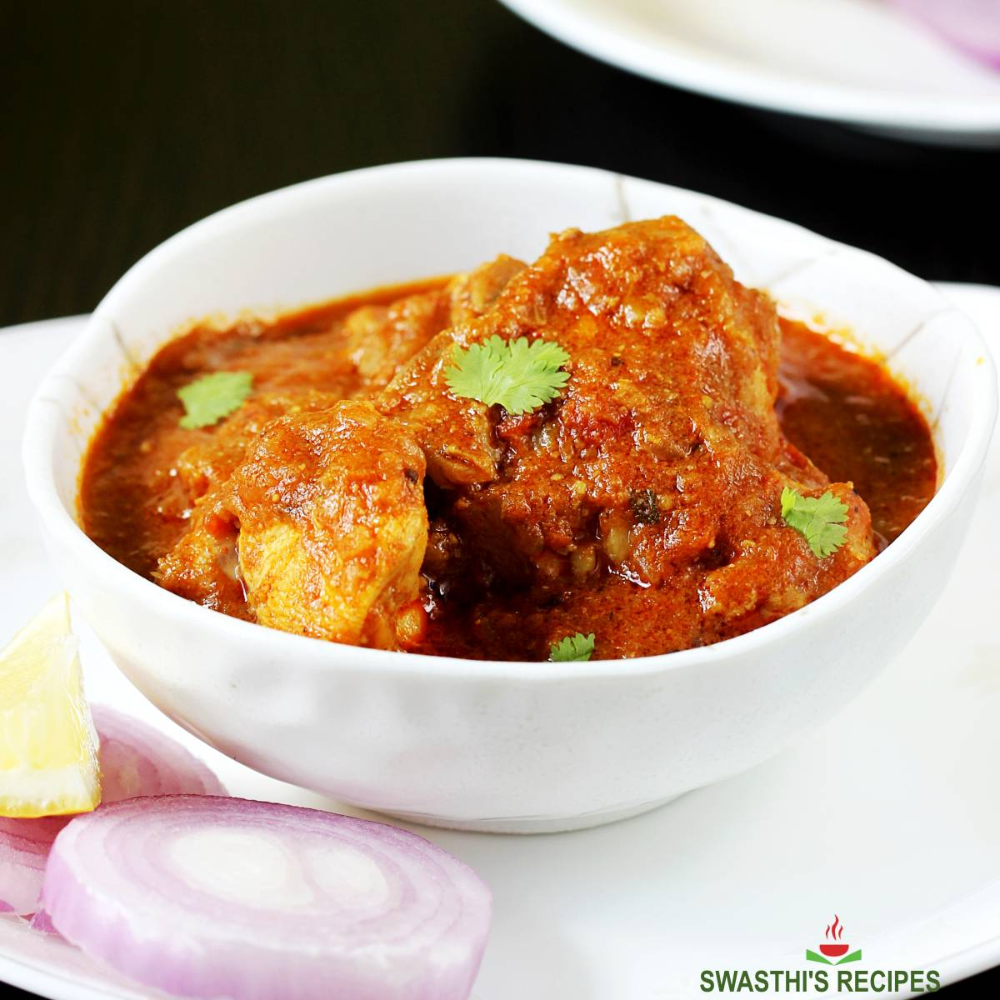

# Portfolio
Recipe
Chicken Curry
The dish chicken curry started about 8 thousand years ago! It has a long history and is made in different places but it originated in India.
It got introduced to places like Japan by British officiers from the expansion of the British East India Company. Later on, it even became popular in the Carribean. Today it is popular in many different places around to world as a delicious Indian meal served at Indian restraunts and made by many people at home.
This recipe makes one of the best tasting chicken curry's. There are many ways to customize it if you like spicier food or more flavoring/spices. You can enjoy this dish with hot Indian flatbread, naan bread, or rice.

Ingredients
- 1/4 cup vegetable, canola, or sunflower oil
- 2 large onions, sliced thin
- 2 large tomatoes, diced
- 2 tablespoons of garlic paste
- 1 tablespoon of ginger paste
- 2 teaspoons coriander powder
- 1 teaspoon cumin powder
- 1/2 teaspoon tumeric powder
- 1/2 teaspoon red chili powder
- 2 teaspoons of garam masala (an Indian spice)
- 2 1/4 pounds (1 kilogram) chicken pieces of your choice, skin removed
- 1 1/2 cups hot water
- Chopped fresh cilantro, for garnish
Directions
- Gather you ingredients.
- Heat your oil in s deep skillet over medium heat. Fry the onions until they are golden brown. After, remove them from the oil with a slotted spoon and drain on paper towels. Turn off the heat and keep the oil in the pan.
- Grind your onions into a smooth paste using a food processor. Remove them from the processor into a bowl and set that aside.
- Using the food processor again, grind the tomatoes, garlic paste, and ginger paste together into a smooth paste.
- Heat the oil in the skillet once again, and add the onion paste to it. Fry for 2-3 minutes. Add the tomato paste and all the spices and powders. Then, mix that very well. The product of it is called masala.
- Fry the masala from the previous step until the oil separates from it.
- Add the chicken to the masala and make sure it cooks well for about 8 minutes.
- Add your 1 1/2 cups of hot water to the chicken, and then simmer it, and cover it. Cook that until the chicken is tender for about 15 minutes.
- Garnish the top with chopped coriander and serve it with Indian flatbreads or rice.
Video
This is a video of what making chicken curry looks like.
Link to video on Youtube if you want to have sound instead of captions
Sources
- https://people.smu.edu/hist2390/2020/06/29/chicken-curry/#:~:text=With%20the%20expansion%20of%20the,dish%20of%20London%20coffee%20houses.
- https://www.daysoftheyear.com/days/national-curried-chicken-day/#:~:text=Getting%20its%20start%20approximately%208000,by%20people%20of%20many%20cultures.